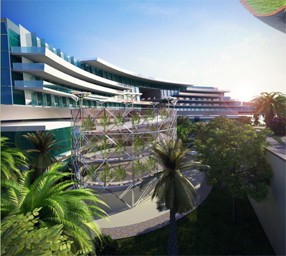
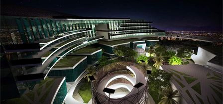
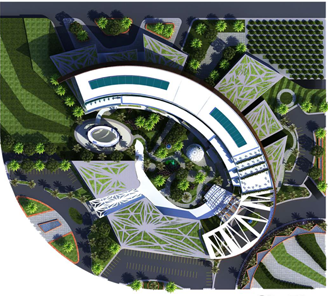

The goal of my capstone project was to make use of waste and unwanted materials. Gardens and recreational spaces were created from reborn waste. The oval volume of the pavilion in nothing but vegetation. Vistors walk along the designated ramp to choose their herbs, plants and vegetables.
  